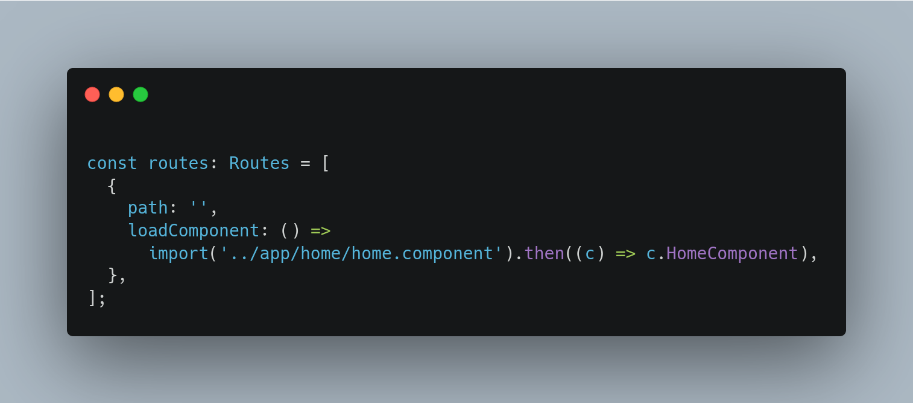

Performant Angular Applications
NgModules are eagerly loaded. This means that as soon as the application
loads, so do all the NgModules, whether they are immediately necessary
or not. For large applications with lots of routes, consider lazy
loading —a design pattern that loads NgModules as needed.
Lazy loading helps keep initial bundle sizes smaller,
which in turn helps decrease load times.

Observables are awesome but you need to unsubscribe it
once the operation has been completed. If you don’t unsubscribe,
it may lead to memory leak and this may cause a performance
issue.

As an application grows, we developers tend to forget about the various
dependencies our Angular app is using. We forget to check our imports to
make sure we're not importing JavaScript dependencies and libraries that
we don't use.
Angular Pipes are one of most awesome utility. There are lot of
predefined pipes in angular which you can make use of in your respective
application. Async Pipe allows you to use RxJS
Observables directly in your respective Angular Templates. But as we saw
earlier, if you subscribe to an observable make sure you unsubscribe it.
But if you use async pipe you don’t have to worry about it. The best use
of Async Pipe is that it allows us to use OnPush Change Detection.
Whenever the value of an observable gets changed, we can inform Angular
about it and the async pipe takes care of updating the current value.
You can use Async pipe as, As I said previously you don’t have to worry
about unsubscribing the respective observable. It’s one of my favorite
pipe in Angular.

The source map explorer determines which file each byte in your minified
code came from. It shows you an interactive tree-map visualization to
help you debug where all the code is coming from.

You can do anything without a third party library that you can do with
one, you just need to write more code yourself.
Third party libraries
are only used for convenience.